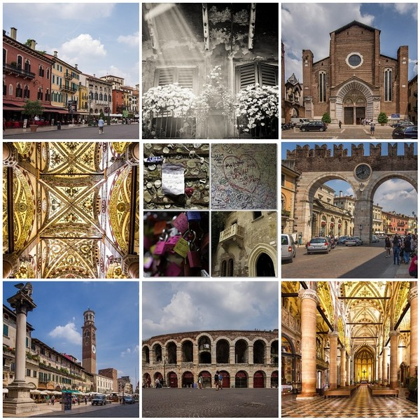

Verona

Верона — город в северной части Италии, вблизи озера Гарда и в излучине быстро текущей реки Адидже — стратегически безупречном месте, так как здесь река выходит со склонов Альп на равнину. Это второй по величине город области Венеция и
административный центр одноименной провинции, где проживает 252,6 тыс. человек.
Верону называют городом мостов (их здесь десять), когда-то это был самый важный город Венецианского государства, расположенный в материковой части Италии. Изобилующий живописными улицами и площадями, славящийся искусством и архитектурой город весьма привлекателен для туристов. Верона была воспета великим Уильямом Шекспиром и стала одним из наиболее романтических мест мира и посещаемым городом Италии. Миллионы путешественников со всего света спешат сюда, чтобы увидеть Дом Джульетты и постоять под ее балконом. Город любви дает возможность каждому почувствовать особую, существующую только здесь романтическую атмосферу. Хоть великий драматург никогда не был в этом городе, однако нам
кажется, что если бы он побывал здесь сегодня, то, возможно, ему так понравились бы и фестиваль на римской Арене, и ежегодная ярмарка вина, что он наверняка придумал бы более счастливый конец для своей пьесы. Многих туристов этот итальянский город привлекает красивыми зданиями и историческими памятниками. По количеству достопримечательностей Верона
не уступает Венеции или Милану и считается «Римом в миниатюре». Исторический центр города – популярная пешеходная зона, все достопримечательности расположены здесь так компактно, что обойти их можно за час-полтора. Самым старым архитектурным памятником города, сохранившимся со времен Древнего Рима, считается Амфитеатр или Арена ди Верона (Via
Dietro Anfiteatro, 6b, Piazza Brà), которую построили из красивого розового мрамора в 30 году до н.э. По размерам и историческому значению веронская Арена может сравниться только с римским Колизеем. Поразительно, что древний памятник выдержал разрушительное землетрясение XII века, а в наши дни он продолжает использоваться как огромный оперный зал.
Популярна у туристов старая площадь Вероны — Пьяцца делле Эрбе. Ее окружают величественные постройки эпохи Возрождения, а по периметру расположены уютные кафе, привлекающие гостей неповторимыми ароматами итальянской кухни.
← На главную